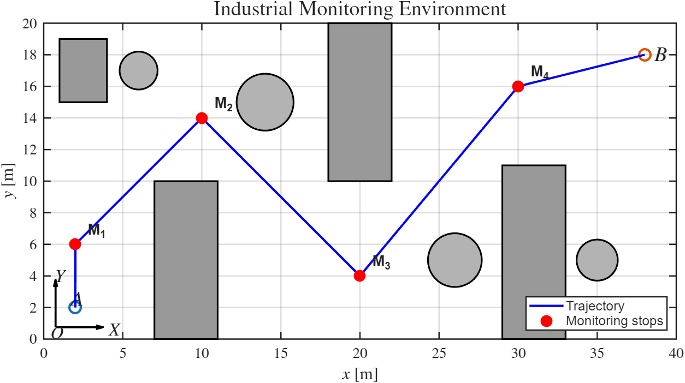
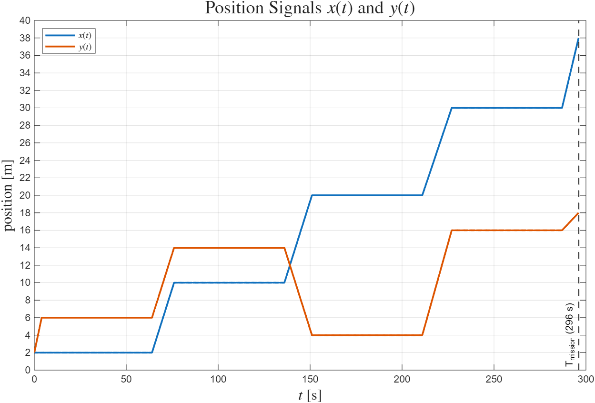

Project · Trajectory & Motion Planning
Fall 2026 · Linear Systems & Signals (ECE 345)
Autonomous Mobile Robot Trajectory Design
Plan a mobile robot's route across a factory floor: stop at four sensing points, clear every obstacle, and reach the end before the battery drops below 60% charge.
- 53.3 mroute, 12% under budget
- 1.8×required clearance
- 296 smission, 300.5 s ceiling
- 0.6046final charge, 0.60 floor


What I did
- Derived a 300.485 s mission ceiling from the battery-discharge model. After four 60 s sensing stops, that left a 60.485 m path budget at 1 m/s.
- My first route ran 71.89 m, 19% over, because zigzagging between stops forced detours around three rectangles. I redesigned it to 53.321 m, with 12% to spare.
- Built x(t) and y(t) from steps and ramps: each move is one ramp pair, and the robot holds still through each stop.
My role
Team of three. I owned Part 1, the trajectory design. My teammates did the sensor model and the sonar processing.
Result
Checked collisions by inflating each obstacle by the 0.40 m robot radius and testing only the center path, sampled every 0.01 s. The tightest point, the corner at (7, 10), cleared by 0.707 m, 1.8× the requirement. The mission ends at 296 s with a final charge of 0.6046, above the 0.60 floor.
Takeaway
Work out the budget before the route. The numbers killed my first design before I drew a second one.